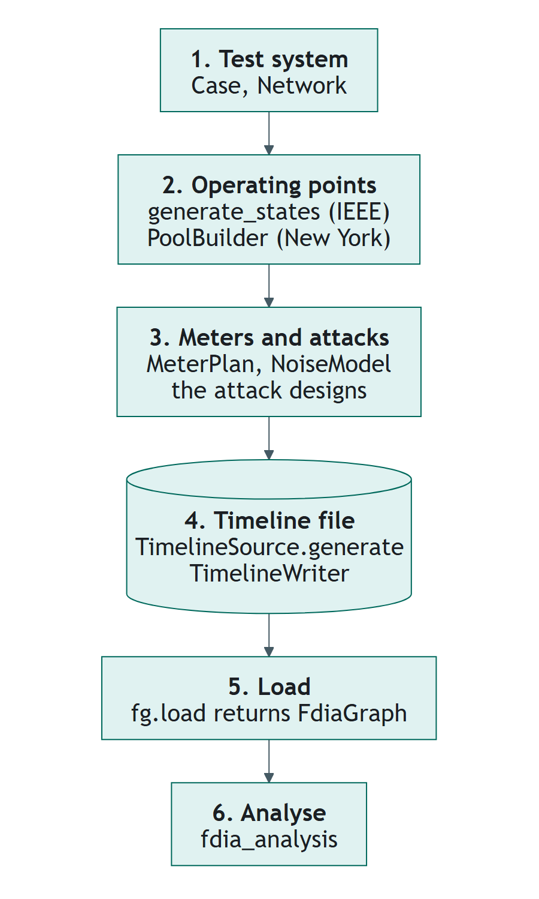

How the package flows¶
A timeline is the meter readings of one grid, frame by frame, with attacks placed in it and labelled per bus. The package builds one in the same stages for every test system. What differs between systems is the settings, and how the operating points are solved.

The sections follow the picture; box 3 is two sections, the meters and then the attacks. Paths
are under src/fdia_graph/ unless a section says otherwise.
Three folders serve every stage. formulas/ holds the mathematics as pure functions, one per
equation. models/ holds every bundle of values that is passed or returned. constants/ holds
the fixed values, each with its unit and its source.
Test system¶
The grid: its buses, branches and generating units, with a base operating state.
Case(systems/case.py) holds one grid as a frozen record of arrays.Network(systems/network.py) builds the admittances of aCaseonce. It gives the injections, flows and currents of any state.
Case.from_ieee(118) gives an IEEE case and nygrid_case() gives the New York grid. Both return
the same class. Test systems lists every system.
You now have: a Case and its Network, which describe the grid.
Operating points¶
One AC operating point per frame, in time order. The set is called the pool. data/ holds
where it comes from, for every test system: first the load data, then the solve.
The load data:
data/profiles.pyreads a load series from a file (load_profile) or fetches it from an operator's feed (fetch_profile). The result is a load profile, one number per step.- The New York grid takes a load per bus.
data/inputs.pydownloads and reads its public input tables,data/load_sources.pyfetches the building and sales data, andLoadModelindata/loads.pybuilds each bus's load from them.data/config.pyholds that build's settings.
The solve:
- IEEE cases:
generate_statesindata/ieee_pool.pyscales the loads along a load profile and solves one power flow per step. - New York grid:
data/dispatch.pysets each hour's dispatch.PoolBuilderindata/pool.pythen solves one optimal power flow per five-minute frame, withIpoptSolver(data/ipopt_solver.py), which runs on the Ipopt thatdata/ipopt.pyfinds and checks, and one power flow at its outputs, withPandapowerSolver(data/pandapower_solver.py).data/pool.pyalso reads and writes the pool file. - Both solvers are engines of one interface,
Solver(data/solver.py). ASolveSettingspassed to either builder picks the kind of solve and the engine (Solving).
The IEEE pools are released, so fg.generate downloads one and you do not build it.
Solving explains the two kinds of solve, and what happens to a frame that does
not solve. Build the operating points has the steps.
You now have: the pool, the true state of the grid at every frame.
Meters and noise¶
What the operator reads from a state. The three classes are in sensing/ and serve every grid.
MeterPlan(meters.py): every meter as one row of a table, with its kind, its place, its owner and its accuracy class.Measurement(measure.py): the measurement function h(x), the readings a state gives, and its Jacobian.NoiseModel(noise.py): each meter's accuracy class, split into a constant bias and a jitter drawn again at every scan.
A benign scan is h(x) of a pool state plus noise. It needs no new solve. Meters and noise explains the plan, the accuracy classes and the noise.
You now have: one benign scan per frame, the readings with no attack.
Attacks¶
An attack is an episode: a run of consecutive frames under one design. engine/ holds the
generator (core.py) and, under engine/attacks/, the attack designs of
every grid. There are two families.
At, the slow ramp: a false load that rises a little each frame.Am, the overload: the reported flow of a line rises to its rating.
Each attacked frame is the reading of one false AC state. The attacker re-solves a small area of the grid and holds every voltage outside it true. The attack vector is h(x_false) - h(x_true), added to the benign scan.
| Family | Design | Family class |
|---|---|---|
At |
ramp_design |
SearchRamp |
Am |
am_overload_design |
SearchOverload |
The designs are methods of FdiaGenerator (engine/core.py), which gets them from
AttackMixin. They run on every test system.
A timeline asks every family the same thing, the episode of a window (EpisodeFamily.designed,
engine/attacks/family.py); the designs answer as the families SearchRamp and
SearchOverload (engine/attacks/search.py). A source also takes a family of your own in
place of one of them. The attack families describes both families and their
designs.
You now have: the episodes, each with its frames, its buses and its attack vectors.
The timeline file¶
generation/ holds the stages that walk a timeline: the plan, the designs, the frames and the
writer. TimelineSource.generate in generation/source.py is the one path every timeline takes: open
the file, cut the train, validation and test splits, place the episodes, design them, walk the
frames in time order, and finish the file.
- The steps are written once. A source is a subclass that builds the generator, the pool and the
designer of its families, and says what its files record. The package has one:
SearchSource(generation/search.py), the original generator, built on aNetwork.IeeeSourceingeneration/ieee.pybuilds it for an IEEE case by name, andSearchSource.for_poolbuilds it on a pool file, as the New York case has. How the splits are cut is a setting of the source,split_by: three blocks in time order, or whole weeks, which need each frame's time (an IEEE pool stores none, so the caller passestime=). TimelineWriter(generation/write.py) is the one writer of the HDF5 file.schema.pydefines every group, dataset and attribute name of the file, once.- Settings arrive as one model from
models/config.py,TimelineSettings.
fg.generate starts an IEEE timeline through generate_timeline in timeline.py. On the New
York case you build the source yourself, with SearchSource.for_pool.
Generate a timeline has every step and every setting, and
Layers and labels what the file stores per frame.
You now have: one HDF5 file. fg.generate also registers it under a name, for fg.load.
Loading¶
fg.load(name, split="train") returns an FdiaGraph, the dataset class in dataset/. It reads
the static graph once and slices records on request, so the whole file is never in memory.
registry.pyturns a name and a data release into a file.download.pyfetches the file to the cache and checks its sha256.dataset/has one concern per file:base.py(shared state),graph.py(the static graph),physics.py(admittances and clean flows),records.py(one record, batches),export.py(whole-split arrays) andsequence.py(windows and episodes).clients.pyreads a timeline that records the owners of its buses as federated clients.errors.pydefines every error the package raises on purpose.
The package's __init__.py imports the heavy helpers only when they are called, so fg.load
never imports torch or pandapower.
The data dictionary says what every array means.
You now have: the timeline as records, batches, windows and episodes.
Analysis¶
The second toolkit, fdia_analysis, measures things on a loaded timeline. Its code is under
analysis/src/fdia_analysis/. Each package has a page with its results.
| Package | Question | Page |
|---|---|---|
se |
what is the true state? | State estimation |
localization |
which buses are attacked? | Localization |
trust |
which meters should be secured? | Trusted meters |
federated |
can clients train without pooling records? | Federated |
se/detect/ holds the alarm rules, which turn a detector's score per scan into a first alarm,
and results/ the code of the results store, where every measured number is kept.
Two toolkits, one direction¶
The generation toolkit is the distribution fdia-graph, the package fdia_graph under src/.
The analysis toolkit is the distribution fdia-analysis, the package fdia_analysis under
analysis/.
fdia_analysis imports fdia_graph: it reads timelines through fdia_graph.dataset and uses
the generation toolkit's formulas and records. Nothing in fdia_graph imports fdia_analysis,
and tests/test_toolkit_boundary.py checks it. The generation toolkit installs and runs alone.
Install and data versions lists every extra.
Where next¶
Read in this order.
- The three tutorials: load a dataset, generate a timeline and analyse a timeline.
- Test systems and Solving: the grids, and how their operating points are solved.
- Meters and noise, The attack families and Layers and labels: what a frame of a timeline holds.
- Generate a timeline and Build the operating points: the steps and the settings.
- Glossary and Data dictionary: every term, every array and its shape.
- Modules: what every file does, in one line.
- Concepts to code and Formulas: the function behind each idea and equation.
- Class map and Examples: the class diagrams, and runnable baselines to copy.
- State estimation guide: fitting and scoring an estimator.
- The four study pages in the table above: what was measured, on what, and the result.
- Contributing: the rules and the pull-request flow.